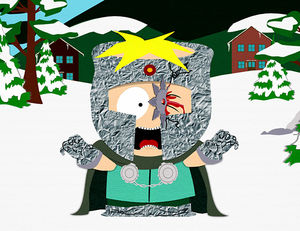

Butters
 De: La Frikipedia, la enciclopedia extremadamente seria.
De: La Frikipedia, la enciclopedia extremadamente seria.
De la serie grandes personajes:
| Nacimiento
|
11 de Sptiembre (No es coña)
|
| Muerte
|
¡Eso nunca!
|
| Ocupación
|
Estudiante
|
| Nacionalidad
|
SouthParkniense.
|
| Malo o bueno
|
Bueno.
|
| Atentados contra la humanidad
|
Fundar un puticlub, fingir su muerte... ah, y mató a 12 personas en un espectáculo (4 de las muertes fueron indirectas), lo que podría reforzar ciertas conexiones con los Asesinos.
|
| Religión
|
Ateo
|
| Notas
|
¡SOY YO!
|
Leopold "Butters" Scrotch (O Leopoldo "Mantequillas" Scrotch) , es uno de los protagonistas principales de South Park.
Apariencia
Tiene un mechón rubio, camiseta verde, pantalones azules, y su cumpleaños cae el 11 de Septiembre. Es algo tímido, tartamudo y sus padres son demasiado estrictos con él.
Personalidad e Historia
Butters siempre apareció en la serie, desde los primeros episodios incluso, pero era Kyle y Kyle y Cartman lo expulsan del grupo cuando deciden que no les agrada lo suficiente, y optan por Tweek para cubrir su lugar.
Esto lleva a Butters a crear un álter ego. A partir de la sexta temporada, Butters comenzó a ganar protagonismo respecto al resto de personajes secundarios, llegando a protagonizar varios episodios por temporada. En una ocasión realizó su episodio íntimo incluso, en el que cuenta su historia.
 Butters con un problemilla de nada.
Es un chico amable, simpático pero torpe. Es algo tartamudo y tiene acento sureño. Sus padres son estrictos y Butters por lo general exagera todo, es asustadizo y siempre se preocupa por sus amigos aunque estos no lo tomen demasiado en cuenta.
Butters fue el primer niño del grupo en madurar y tener una muestra de lefa. Butters tiene una doble vida, un álter ego, conocido como el Profesor Caos (Ese de la imagen), el cual se supone que es un supervillano. El Profesor Caos tiene un disfraz como el de la foto, pero sin la sangre y la estrella ninja, consiste en: Una capa verde y en un casco y guantes hechos de papel aluminio.
Busca venganza contra todos aquellos que tratan mal a Butters, aunque a fin de cuentas no es tan malvado. A pesar de que Butters fue expulsado del grupo de amigos, ha seguido apareciendo en la serie sin su forma de álter ego, junto con los otros chicos, aunque en algunas ocasiones, es víctima de las humillaciones bromas de Eric Cartman.
Es un excelente bailarín y fue un campeón de claqué, pero se retiró después de causar un accidente en un concurso de talentos en el que murieron 8 miembros de la audiencia, sin incluir al bebé de una señora embarazada y a los 3 familiares que se suicidaron después de escuchar sobre el incidente. En un episodio hace un vídeo clip en YouTube para conseguir dinero y así acabar con la huelga en Canadá, el videoclip se llama "What What in the Butt".
Momentos míticos
- En su primera aparición hablada se queda encerrado en el sótano de la casa del consejero del colegio, arriba los padres hacían de todo arriba, se quedo encerrado junto a Stan, Doggi y Pip. Donde se creen los ángeles de Charley.
- En el episodio 6x07, Los Simpsons lo han hecho ya, Butters planea una serie de estrategias malvadas supuestamente originales, aunque no las lleva a cabo después de que el General Desastre le informa que esas ideas ya han sido usadas en los episodios de Los Simpson. Luego es consolado al decirle que esto sucedió solamente porque la serie Los Simpson lleva mucho tiempo en el aire, y no por su falta de creatividad. Después de este episodio, el Profesor Caos ha hecho muy pocas apariciones.
- En el penúltimo episodio de la temporada 7, "Pasitas", Butters ingénuamente se enamora de una mesera de sobrenombre "Lexus", Butters piensa que es su nombre verdadero, aunque las demás meseras se hacen llamar Porsche, Ferrari, etc. Y no se da cuenta de que lo tratan bien para obtener sus propinas.
- En la temporada 11 le toca protagonizar un especial llamado Imaginacionlandia (capítulos 10, 11 y 12), pues al ser tan creativo los habitantes de ese mundo le dicen que el es uno de los "creadores".
- En la temporada 8, el episodio de Buenos momentos con armas, en venganza por que los chicos no le dejaron jugar con ellos, compra armas en el mismo lugar donde las compraron ellos, sin embargo Kenny le arroja una estrella ninja y se le incrústa en un ojo. Los demás lo disfrazan de perro y lo llevan con un veterinario.
- En la temporada 11, cuando su maestro (en ese entonces era mujer) les cuenta a sus alumnos su experiencia lésbica, Butters le dice que tenga cuidado al usar las tijeras, aunque su maestra se refería a una posición sexual.
- Cuando se entera de que Eric Cartman fue diagnosticado con SIDA, amablemente le da su apoyo aunque Cartman fiel a su estilo le dice que eso es gay.
- En un viaje escolar, nadie quiere hacer pareja con Cartman, ya que Stan se fue con su novia Wendy, Butters acepta hacer pareja con Cartman y este le obliga a fugarse del paseo escolar. Butters sufre todo tipo de cosas hasta que por fin, a punto de morir deja a su compañero en el autobús escolar. Sólo así pudo soltar a Cartman.
- En principios de la serie, Kenny trabajaba para Cartman, pero ante la ausencia de Kenny, Butters empezó a trabajar para él. Fue Butters quien ayuda a Cartman a infectar a Kyle con el VIH.
- Eric Cartman traiciona a Butters aunque el lo considera su amigo, en un episodio de la temporada 8, Eric se disfraza de robot haciéndose llamar el Genial-o (Awesom-o en inglés) y fingiendo ser un regalo desde Japón, Eric piensa revelar todos los secretos de Butters hasta que este le cuenta a su "nuevo robot" que tiene un vídeo de Cartman imitando a Britney Spears.
Ayuda a Cartman en su lucha por salvar a Estados Unidos de la invasión China, ya que Cartman está convencido de que los chinos planean apoderarse del mundo. Sin embargo al tomar rehenes en un restaurante chino, Cartman le ordena dispararles a los rehenes y este les dispara hiriéndolos en el pene. Cartman se enoja y lo deja solo.
- Se convierte en Vampiro para no ser regañado por sus padres (parodia de Crepúsculo). Pero esa vida lo cansa y la deja para ser normal.
- Fundó un puticlub.
- Fue el primer niño de la serie en correrse.
¿Relación sentimental con Kenny?
Dada la creciente popularidad de este personaje por su ternura y estrambótica inocencia, recientemente se le ha vinculado sentimentalmente con Kenny... Al menos en el mundo de los fanfictions.
Raro pero cierto: Muchos fans de South Park ya hasta lo casaron con el del anorak naranja, tal vez en un dedicado esfuerzo en aliviar un poco su soledad... O no sé qué onda con eso.
¿Conexión con los Asesinos?
Como suena el rumor: Al parecer este pequeño es en realidad uno de los descendientes regados de Ezio Auditore Da Firenze (ojo: Ezio solía... Ejem! Tener aventurillas extramaritales por ahí como buen macho-man), lo que lo convierte en el siguiente Asesino en línea después de Desmond Miles. Incluso se dice que es el hijo bastardo de Desmond Miles, aunque hasta el momento estos rumores no han sido científicamente comprobados.
Y en caso de serlo, por favor llamen a Ubisoft para reportar el hallazgo.
Ver también
Autor(es):
- ElInventor
- Butters2
- Genericool
- Jack crazy
- KillGame
- Vicolico88
- Jaime10
- Pau25987
- Monk
- AndyFTW
Frikipedia 2005-2016, Licencia
GFDL 1.2 - Extraído por FrikiLeaks